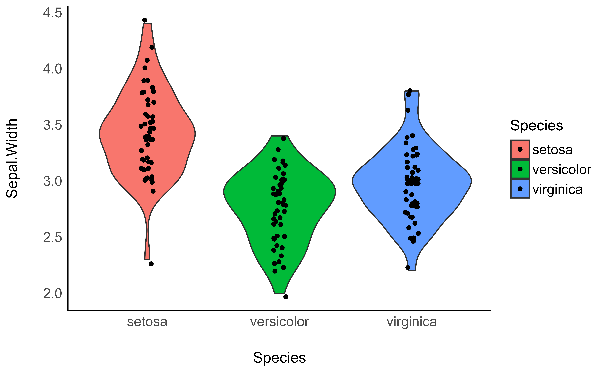
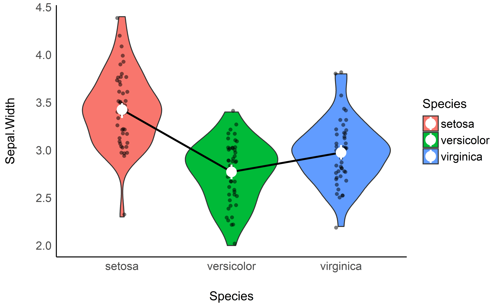
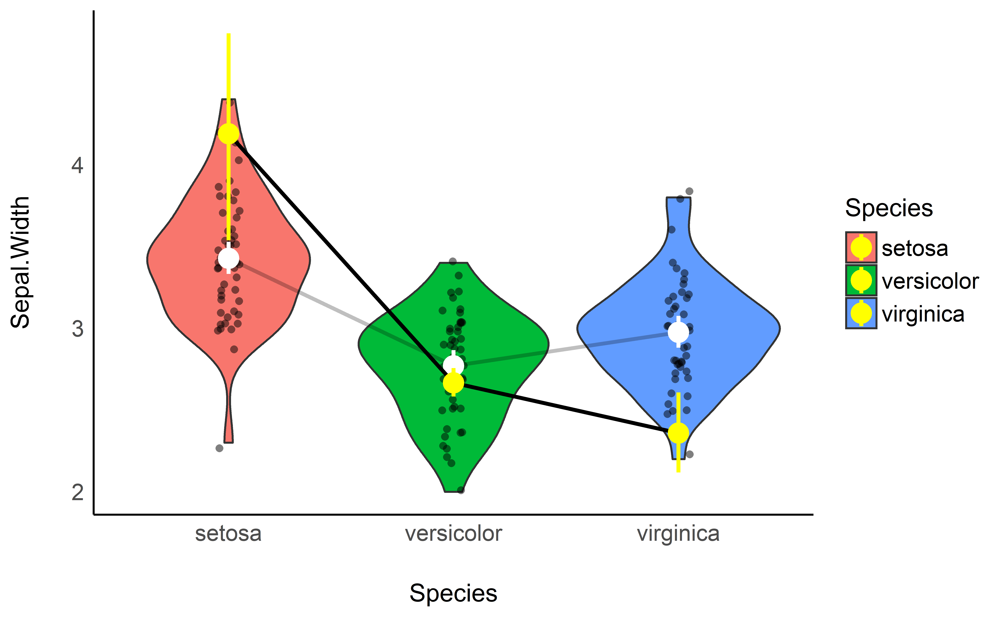

vignettes/estimate_means.Rmd
estimate_means.RmdThis vignette will introduce the concept of marginal means. Warning: we will go full Bayesian. If you’re not familiar with the Bayesian framework, we recommend starting with this gentle introduction.
The iris dataset, available in base R, contains observations of 3 types of iris flowers (the Species variable); Setosa, Versicolor and Virginica, for which different features were measured, such as the length and width of the sepals and petals.
A traditional starting point, when reporting such data, is to start by descriptive statistics. For instance, what is the mean Sepal.Width for each of the 3 species.
We can compute the means very easily by grouping the observations by species, and then computing the mean and the SD:
library(dplyr)
iris %>%
group_by(Species) %>%
summarise(Mean_Sepal.Width = mean(Sepal.Width),
SD_Sepal.Width = sd(Sepal.Width))> # A tibble: 3 x 3
> Species Mean_Sepal.Width SD_Sepal.Width
> <fct> <dbl> <dbl>
> 1 setosa 3.43 0.379
> 2 versicolor 2.77 0.314
> 3 virginica 2.97 0.322We can also provide a plot:
library(ggplot2)
library(see)
ggplot(iris, aes(x = Species, y = Sepal.Width, fill = Species)) +
geom_violin() +
geom_jitter2(width = 0.05) +
theme_modern()
However, these raw means might be biased, as the number of observations in each group might be different. Moreover, there might some hidden covariance or mediation with other variables in the dataset, creating a “spurious” influence on the means. How to take these things into account?
Another way of analyzing the means is to actually statistically model them, rather than simply describe them as they appear in the data. For instance, we could fit a simple Bayesian linear regression modeling the relationship between Species and Sepal.Width.
Marginal means are basically means extracted from a statistical model. Note that as we are in a Bayesian framework, we will report the median of the posterior distribution of the marginal means.
library(rstanarm)
library(modelbased)
model <- stan_glm(Sepal.Width ~ Species, data = iris)
means <- estimate_means(model)
means> Species | Mean | 95% CI
> --------------------------------
> setosa | 3.42 | [3.33, 3.52]
> versicolor | 2.77 | [2.68, 2.87]
> virginica | 2.98 | [2.88, 3.07]We can now add these means, as well as the credible interval (CI) representing the uncertainty of the estimation, as an overlay on the previous plot:
ggplot(iris, aes(x = Species, y = Sepal.Width, fill = Species)) +
geom_violin() +
geom_jitter2(width = 0.05, alpha = 0.5) +
geom_line(data = means, aes(y = Mean, group = 1), size = 1) +
geom_pointrange(data = means, aes(y = Mean, ymin = CI_low, ymax = CI_high), size = 1, color = "white") +
theme_modern()
The power of marginal means resides in the fact that they can be estimated from much more complex models. For instance, we could fit a model that takes into account the interaction with the other variables, Petal.Length and Petal.Width. The estimated means will be “adjusted” (or will take into account) for variations of these other components.
model <- stan_glm(Sepal.Width ~ Species * Sepal.Length * Petal.Width, data = iris)
means_complex <- estimate_means(model)
means_complex> Species | Mean | 95% CI
> --------------------------------
> setosa | 4.19 | [3.52, 4.85]
> versicolor | 2.67 | [2.58, 2.75]
> virginica | 2.38 | [2.15, 2.60]ggplot(iris, aes(x = Species, y = Sepal.Width, fill = Species)) +
geom_violin() +
geom_jitter2(width = 0.05, alpha = 0.5) +
geom_line(data = means, aes(y = Mean, group = 1), size = 1, alpha = 0.25) +
geom_pointrange(data = means, aes(y = Mean, ymin = CI_low, ymax = CI_high), size = 1, color = "white") +
geom_line(data = means_complex, aes(y = Mean, group = 1), size = 1) +
geom_pointrange(data = means_complex, aes(y = Mean, ymin = CI_low, ymax = CI_high), size = 1, color = "yellow") +
theme_modern()
That’s interesting: it seems that when adjusting the model for petal characteristics, the differences between Species seems to be even bigger!
But are these differences “significant”? Click here to read the tutorial on contrast analysis.